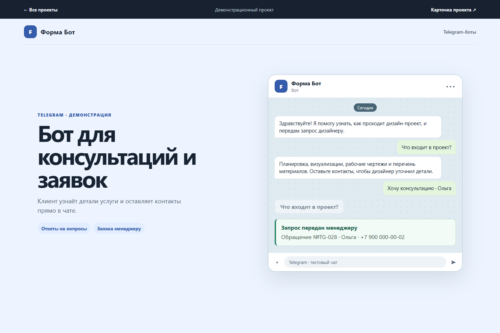

Telegram-боты / Демонстрационный проект
Бот для консультаций и заявок
Студии нужен первый контакт с клиентом через чат.
Что реализовано
Реализовал ветку частых вопросов, форму контактов и карточку передачи обращения менеджеру.
Что показать клиенту
Нажмите «Что входит в проект?», введите тестовые контакты и отправьте запрос.

Проект работает в браузере на тестовых данных. Сторонний аналог на GitHub ↗

